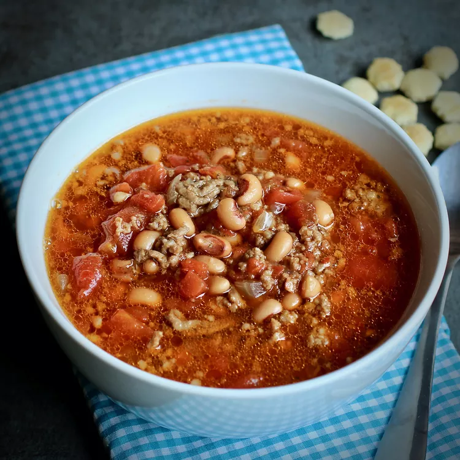

Description
This is a great New Year's meal! Perfect on a cold winter night. Great comfort food. Serve with corn bread.
Ingredients
- Sasusage
- Beef
- Onion
- 4 cups water
- garlic salt
- ½ teaspoon salt
- 4 beef bouillon cubes
- ¼ teaspoon ground black pepper
Steps
- In a large Dutch oven, cook and stir the pork sausage and ground beef with the onion over medium heat until the meat is no longer pink, 10 to 12 minutes; drain off excess fat. Pour in the water, and stir in black-eyed peas, diced tomatoes, tomatoes with green chiles, Worcestershire sauce, garlic salt, salt, canned green chilies, molasses, beef bouillon cubes, black pepper, and cumin until thoroughly mixed.
- Bring the soup to a boil, reduce heat to a simmer, cover, and simmer for 45 minutes.